Обзор проекта
Slotly — мобильный сервис онлайн-записи для локального бизнеса: барбершопов, салонов красоты, стоматологий, клиник, автосервисов и репетиторов. Версия 0.2.0 — связный MVP с двумя ролями, работающий полностью на устройстве.
Проблема и идея
Небольшие компании принимают записи по телефону и в мессенджерах: клиенту нужно звонить в рабочее время, администратору — вести расписание вручную, владелец не видит, какие услуги и мастера востребованы. Slotly показывает места с рейтингом и честными отзывами, свободное время специалистов и подтверждает запись сразу, а владельцу даёт кабинет с услугами, ценами и аналитикой.
Две роли
Клиент
Каталог мест и услуг, поиск и фильтры, страница организации с галереей до пяти фото, прайсом с вариантами цены, специалистами и рейтингом. Запись, перенос и отмена, «Я на месте», отзыв после визита, избранное, локальные напоминания.
Владелец
Обзор с KPI и графиками за 7/30/90 дней, записи организации и отметка прихода по рукописному номеру талона, услуги и прайс, скрытие услуг, отзывы с ответами, профиль организации и фотографии. Видит только свою организацию.
Граница версии. Вход, проверка прав, хранение данных, аналитика и напоминания работают на устройстве. Это прототип серверной системы, а не production-backend: см. «Вход и роли» и «План развития».
Цели
- Сохранить выполнение лабораторных №1–3 и самостоятельной работы.
- Превратить демонстрационные сценарии в связный продукт: жесты — часть реальных действий, аналитика — из исходных данных, права — в слое данных.
- Работать без обязательного сервера и подготовить границы для Django/DRF.
- Оставаться лёгким для телефона среднего класса и понятным для команды из трёх человек.
Скриншоты
Сняты 10 октября 2026 года с profile-сборки на эмуляторе Android 16 (API 36). Все данные демонстрационные. Скриншоты версии 0.1.0 по-прежнему используются на страницах лабораторных.


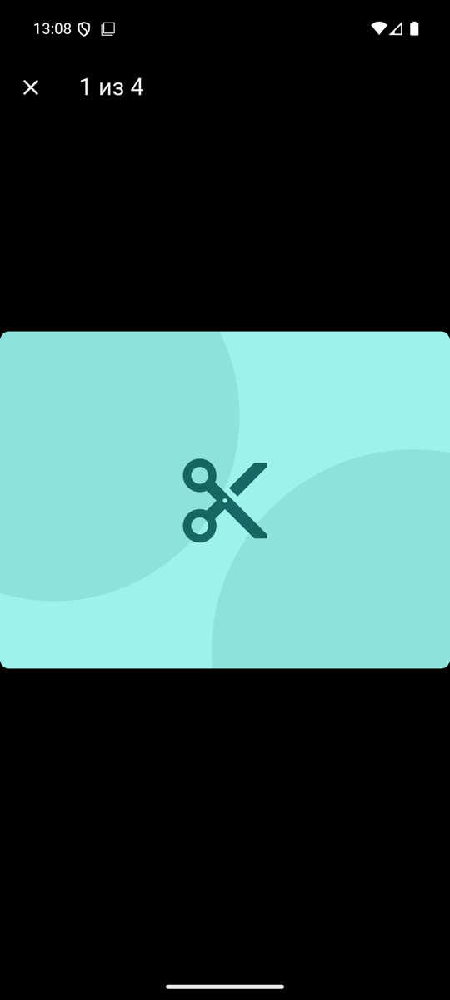
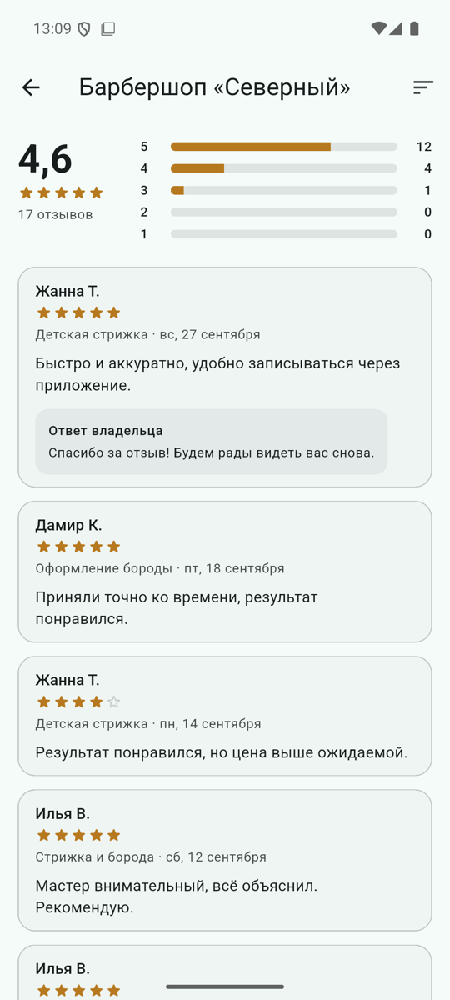
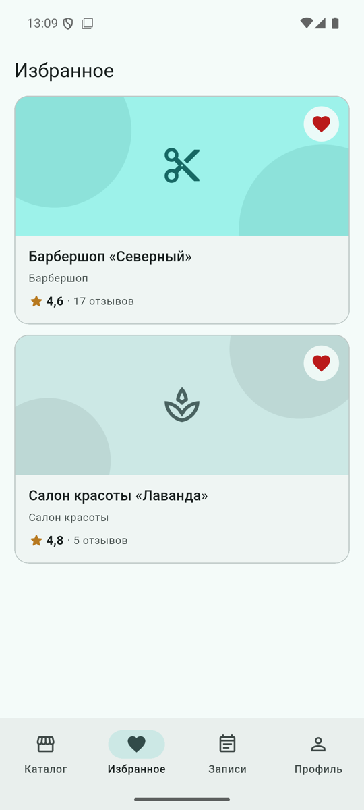


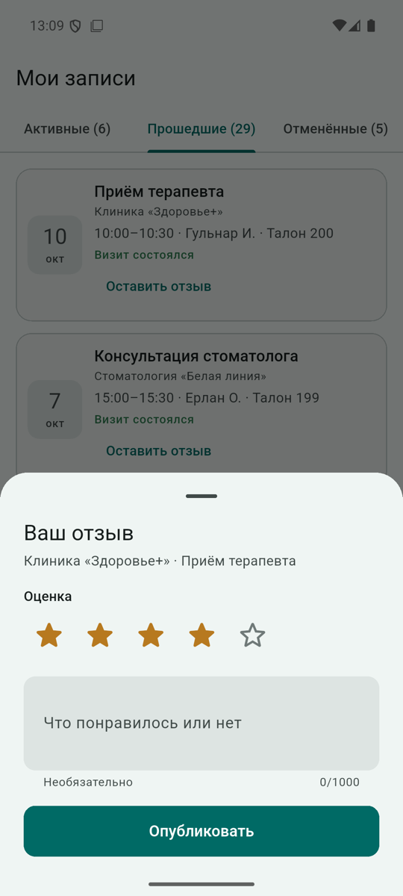

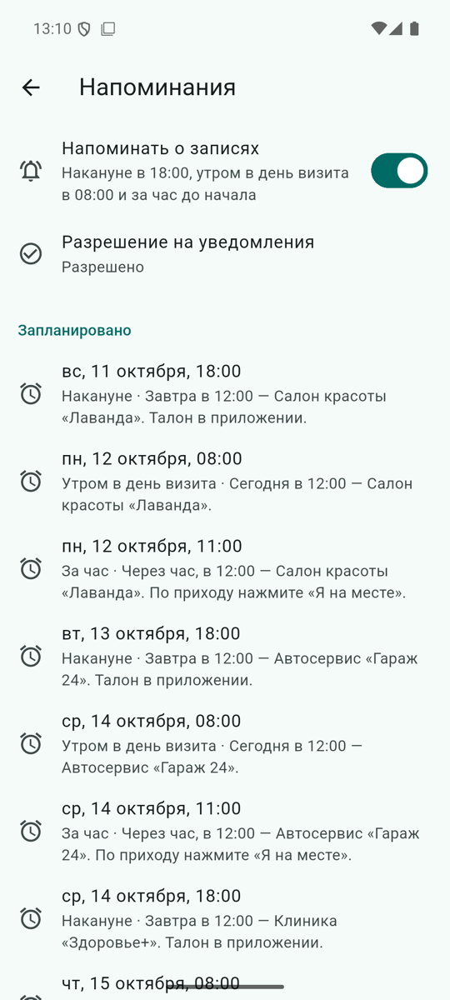
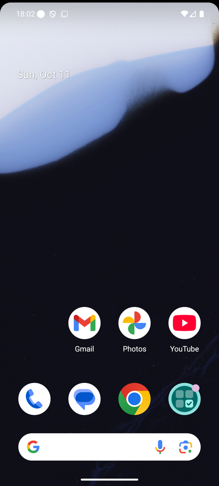

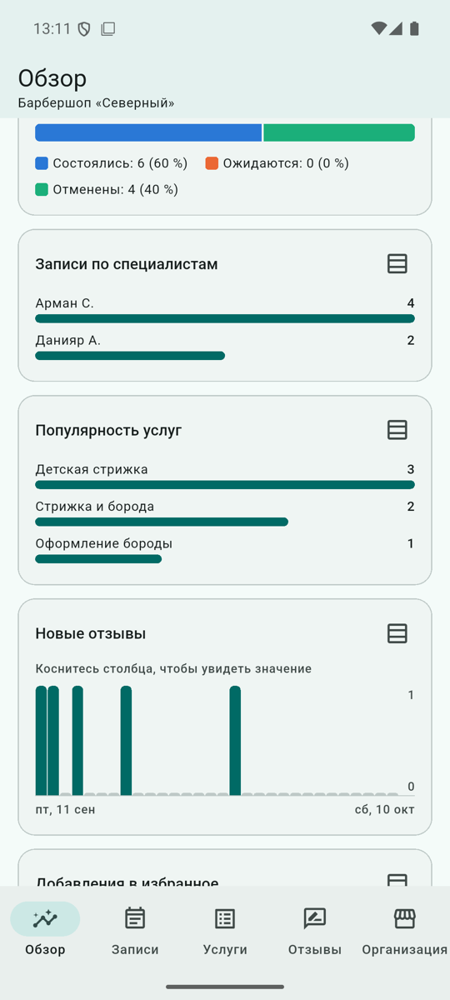
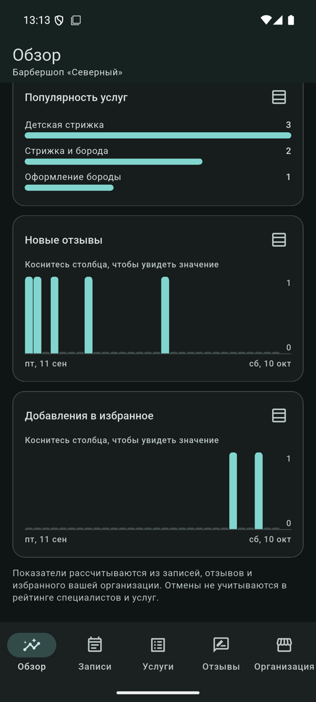
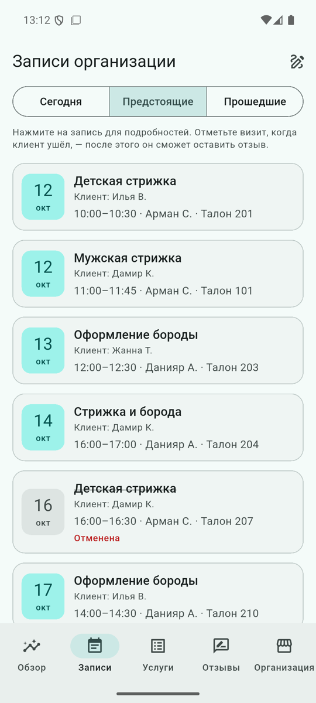
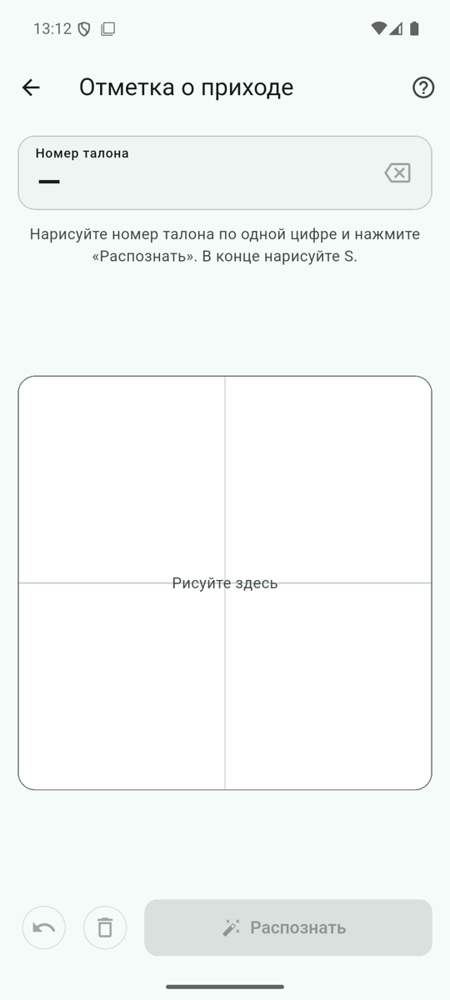
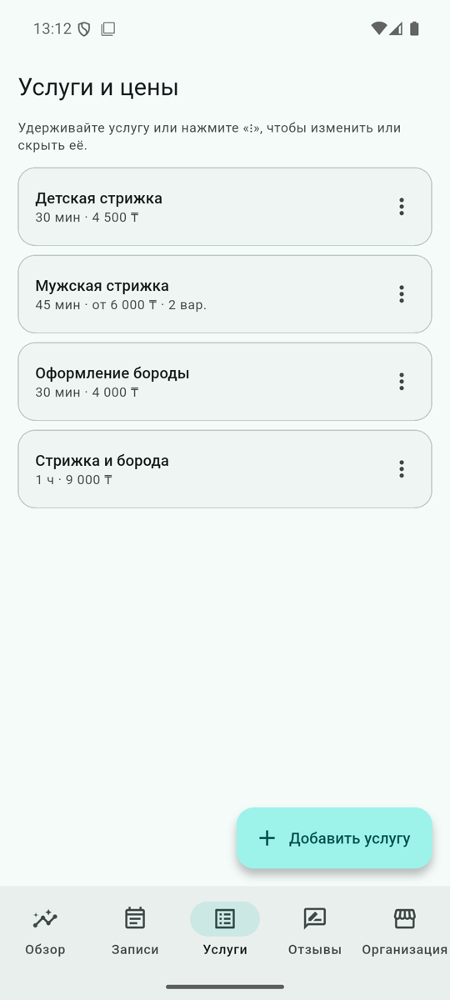
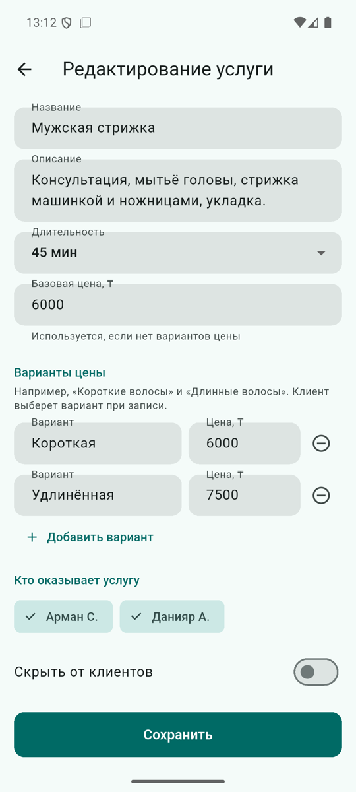
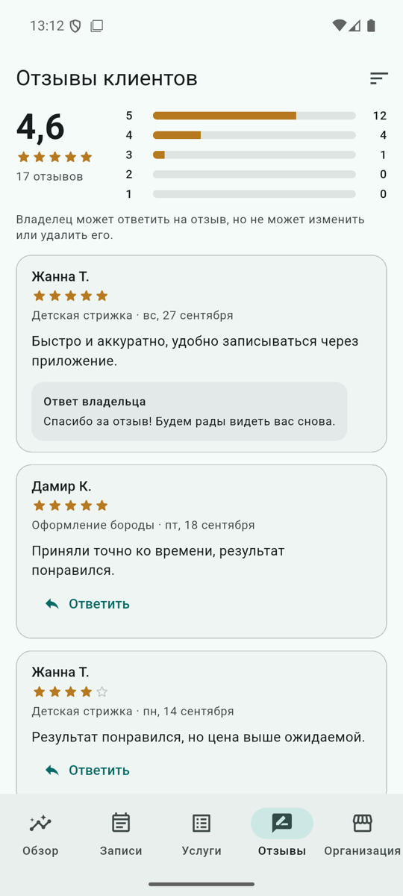
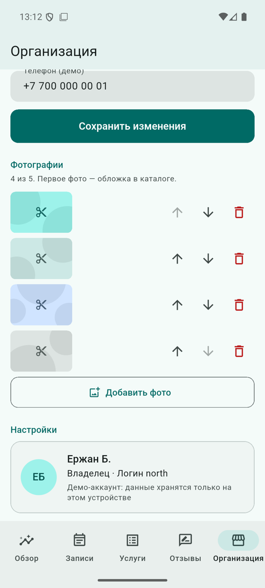
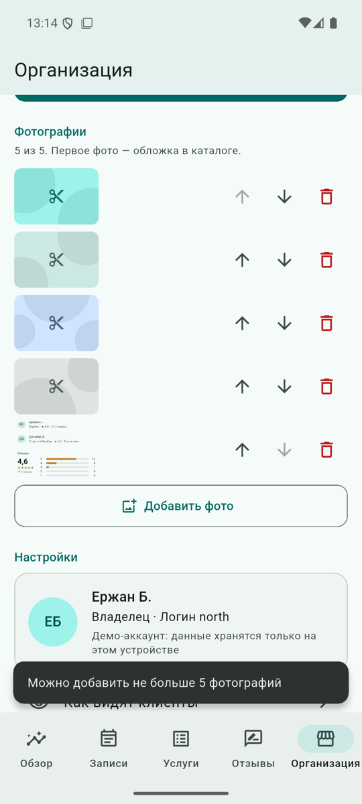
Технологии
| Область | Решение |
|---|---|
| Язык и фреймворк | Dart 3.13, Flutter 3.47 (stable), Material 3 |
| Платформа | Android 7.0+ (minSdk 24), targetSdk 36 |
| Состояние | ChangeNotifier, LiveQuery, setState |
| Навигация | Navigator, корень по роли, NavigationBar + IndexedStack |
| Данные | Локальная база AppDatabase (JSON-документ с версией схемы) за контрактами репозиториев |
| Права | AccessPolicy в каждом репозитории |
| Напоминания | flutter_local_notifications, timezone, flutter_timezone |
| Фото | image_picker (Photo Picker), копия в каталоге приложения |
| Тесты | unit, widget, golden, 8 интеграционных сценариев, замер кадров |
Где читать дальше
- План эволюции продукта — решения и альтернативы.
- Архитектура, матрица прав, демо-данные.
- Сценарий демонстрации и защита.